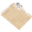

Map
Nearby locations
The 10 closest locations, measured in a straight line between the map markers (1 world unit is 1 metre), with the direction to go from here.
| Location | Kind | Region | Distance | Direction |
|---|---|---|---|---|
 Flottnäsviken Flottnäsviken | Port | Himfjäll | 230 m | NW |
 Readiness Storage 09 Readiness Storage 09 | Military base | Himfjäll | 284 m | NE |
 Furbacka Vacation Village Furbacka Vacation Village | Tourist attraction | Himfjäll | 352 m | N |
 Himsundsbryggan Himsundsbryggan | Campsite | Himfjäll | 371 m | W |
| Ulvstugan Slope Cabin | Campsite | Himfjäll | 381 m | S |
| Hammarbodarna | Tourist attraction | Himfjäll | 473 m | SE |
 Lennarts Marin AB Lennarts Marin AB | Industry | Forest | 483 m | W |
 Ranger Cabin Ranger Cabin | Settlement | Himfjäll | 507 m | E |
| Enhyttan Camping Ground | Tourist attraction | Himfjäll | 553 m | SW |
 Beredskapsförråd 113 Beredskapsförråd 113 | Bunker | Forest | 562 m | NW |
Safehouse
No safehouse here. The nearest one is Himsundsbryggan (Himfjäll (Alpine Unrest)), 374 m to the west.
Collectibles and markers nearby
Collectibles, schematic points, house photos, control points and beacons within 300 m of the location marker, nearest first. The last column is the internal place name the game files give the marker.
| Type | Name | Distance | Direction | Place |
|---|---|---|---|---|
| Vacation Photo 19 | 132 m | NE | Island01 N003 | |
 Character Biographies | Biography 05 - Ingrid | 158 m | W | Island01 W001 |
| Audio Log 01 - Von Ulmer 01 Alpine Unrest | 210 m | N | Island01 N002 |
Loot
The location's files list 228 loot crate spawn points (CLootCrateSpawnPoint). These are the crates your save counts for this location's loot progress.
Placed loot within 200 m that is closer to Marksätern than to any other location (from the interactive map's Extra Locations layer).
| Category | Count | Breakdown |
|---|---|---|
| Weapons | 4 | Q2 3 Q3 1 |
| Items | 53 | Gasoline 20, Simple First Aid Kit 12, Semla 11, Standard First Aid Kit 7, Radio 2, Boombox 1 |
| Crate spots (map layer) | 387 | Apparel packs 130, Ammo boxes 97, Equipment boxes 97, Car hoods 15, Suitcases and backpacks 15, Bodies 13, Weapon boxes 11, Machine wrecks 9 |
CLootCrateSpawnPoint objects listed in the location files: what your save tracks for a location's loot progress. The crate spots (map layer) are every crate spot of the interactive map's loot layer within 200 m that is nearer to this location than to any other, whichever game file it comes from, so the two numbers rarely match. Neither means a crate is always there: the game may leave a spot empty.Weapons, attachments and other single items placed here:
| Item | Quality | Count |
|---|---|---|
| .44 Magnus (Good) | Good | 1 |
| Automatgevär 5 (Worn) | Worn | 2 |
| HP5 (Worn) | Worn | 1 |
Missions
Missions whose name, briefing or steps mention Marksätern.
| Mission | Type | Region | Summary |
|---|---|---|---|
| For the Sick and the Injured | Main Alpine Unrest | Himfjäll (Alpine Unrest) | Bring some medicine to Anita's group to gain their trust |
| Not Alone | Main Alpine Unrest | Himfjäll (Alpine Unrest) | Find a way to get over to the island of Himfjäll to find Anita's group |